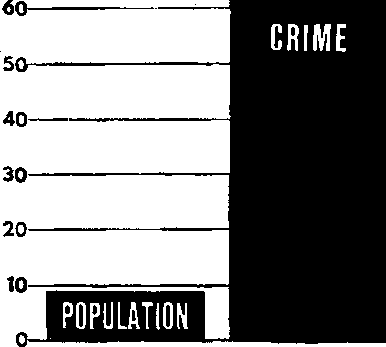
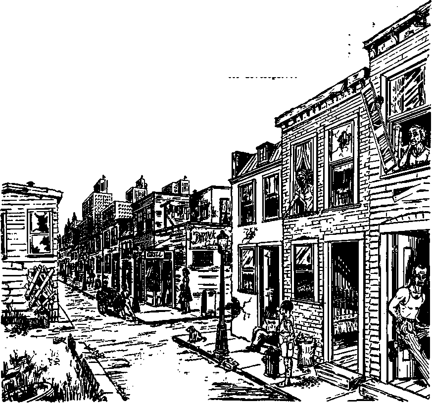

JANUARY 8, 1968
THE REASON FOR THIS MAGAZINE
News sources that are able to keep you awake to the vital issues of our times must be unfettered by censorship and selfish interests. "Awake!’* has no fetters. It recognizes facts, faces facts, is free to publish facts. It is not bound by political ties; it is unhampered by traditional creeds. This magazine keeps itself free, that if may speak freely to you. But it does not ;abuse its freedom. It maintains integrity to truth.
The viewpoint of "Awake!" !is not narrow, but is international. “Awake!” has its own correspondents in scores of nations. Its articles are read in many lands, in many languages, by millions of persons.
in every issue “Awake!" presents vital topics on which you should be informed. It features penetrating articles on social conditions and offers spund counsel for meeting the problems of everyday life. Current news from every continent passes in quick review. Attention is focused on activities in-the fields of government and commerce about which you should know. Straightforward discussions of religious issues alert you to matters of vital concern. Customs and people in many lands, the marvels of creation, practical sciences and points of human interest are ail embraced in Its coverage. “Awake!” provides wholesome, instructive reading for every m.ember of the family.
"Awake!” pledges itself to righteous principles, to exposing hidden foes and subtle dangers, to championing freedom for all, to comforting mourners and strengthening those disheartened by the failures of a delinquent world, reflecting sure hope for the establishment of God's righteous new order in this generation.
Get acquainted with "Awakel" Keep awake by reading "Awake!"
■w—fll—WH—■
PtlBUSHSD SIMULTANEOUSLY IN THE UNITED STATUS BT TH3 WATCHTOWER BIBLE AND TRACT SOCIETY OF NEW YORK, INC. 117 Adams Street Brooklyn, N.Y. 11301, U.S.A,
and in Enoland
WATCH TOWER BIBLE AND TRACT SOCIETY
Watch Tower House, The Ridgeway London N.W, 7, England N. H. Knokb, president Ghani suiter, Secretary
Average printing each issue: 4,850,000 4d a copy (Australia 5c; SMth Africa, 3'/a«)
Yearly Mibseriptfon ratw ftfflcoi for seminionthly tdltlona
America, U.S., 117 A<J*n» Strut, Brooklyn, N.Y. 11201 11 AisValln, li Beresford M. SttitWM, N.S W.
Canada, 1!H) BridgeUnd Are , Toronto 19, Out
England, Watch Tower House,
Nw Zealand, 621 New North Ed., Auckland S.W. 3
Sooty AfrMa, Private Bag 2, P.U, Bland&fontelti, Tri. 7 Ou
(Monthly editions cost half th# above rates.)
Remittances for subscriptions should be tent to the office yjiis YrtJtrtTKlae send jour to Brooklyn.
Notice of expiration is sent at least two Issuea before subscription empires.
Now published in 26 languages Semimonthly—Afrikaans, Cebuano, Danish, Dutch, English, Finnish, French, German, Greek, Eoko, Italian, Japanese, Korean, Norwegian, Portuguese, Spanish, Swedieb, Tagalog, Zulu.
MMWy—Cfalnete, Clnyaula, HUigaynon, Malayalam, Polish, Tamil. Ukrainian.
CHANGES OF ADDRESS should reach us thirty days before your moving date, Give us ydur old and new address (if possible, yoar «ld address label). Write Watch Tower, Watch Tower House, The Ridgeway, London N.W. 7, Etmtaod.
Entered as secood-eJaas matter at Brooklyn, N.Y. 1 Printed In England
The Bl>l« translation regiiarfy rwd In "Awakel’1 |g the Neff World Translation of the Holy Scrlptiret, 1961 edition. When other translations are ased, this is dearly marked.
H “n|1 ““ ■- VI VA u< WI p.ra
CONTENTS
Do You Want a New Order Free from Lawlessness?
Flood of Lawlessness Engulfing the Earth
Protect Yourself from Lawlessness
God’s Word Reforms Lawbreakers
“Your Word Is Truth’’
Why Do the Wicked Prosper?
20
26
27
HAT would it mean to you if the world were free from lawlessness?
It would mean that you could step out of your home and never worry about locking a door. You could visit any neighborhood without being afraid. You could sit in any park late at night. You could talk to any stranger without fear. You would never have to be concerned about the safety of your home or your loved ones.
No doubt you, as most persons, want the world to be free from lawlessness. Certainly it would be a wonderful thing to live in a new order where nothing would ever mar your happiness or jeopardize your freedom, possessions, life or loved
ones. ,
Will there ever be such a system of things? Will all the energies and wealth now lost due to lawlessness ever be channeled into constructive work? Will it ever be possible for everybody to enjoy life under such secure conditions?
Judging from today’s news everywhere, it would be simple to conclude that an order free from lawlessness can never be a reality.
However, do not dismiss the possibility of living in a new order that is free from
Do YOU Want a 1
FREE FROM LAWLESSNESS?
lawlessness. Why not? Because such an order will come without fail, and soon!
Within this generation the world will be rid of all lawbreakers! Yes, you will then be able to forget about locking your door. You will then feel free to visit anywhere and talk to anyone. You will never again have to worry about the security of your home or loved ones. And tiie world will be free from things that drive many to lawlessness, such as poverty, prejudice and injustice.
Because a new order that will be free from lawlessness is nearing a reality, we invite you carefully to consider the articles that begin on the following page. First, these articles will examine the trend in lawlessness today. Then they will analyze the reasons authorities give as to why such lawlessness exists in our time. Next, they will discuss the more important causes for this lawlessness and when and how that lawlessness will positively end. This issue will also give information on how you
can protect yourself from lawlessness now.
First of all, then, let us examine the extent of lawlessness in our time, in this generation, in this year. Just what is going on in this regard throughout the world? How widespread is lawlessness today? What damage to life and property is involved? What are the facts?
stated that the whole world was going through a “major international breakdown in respect for law and order.” He noted: “Public antagonism toward the police is reaching epidemic proportions all over the world, not only in those countries which we are wont to refer to as underdeveloped countries, but in countries which have been
AUTHORITIES agree on this central fact: There is a raging flood of lawless activity all over the world. And it is fast increasing. In many areas it is out of control. Your personal safety is Ming jeopardized as never before!
This epidemic of crime is not confined to one type of society. Not only the underdeveloped countries suffer from it. Even in the most prosperous lands there is an enormous increase of lawlessness.
The recently retired head of the Royal Canadian Mounted Police, G. B. McClellan, and are regarded as some of the most highly civilized in the world.”
Similarly, prominent British attorney Lord Shawcross made this observation:
“Almost everywhere, including Soviet Russia, there appears to be an increase in crime, and particularly, alas, in juvenile crime.... “Why is it that there is this increase in crime, when we were all entitled, perhaps, to think that the unexampled prosperity which we enjoy now, the better education, the rather better housing conditions, and so on,
would conduce to the opposite result? I wish I knew the answer.”
One part of the increase of lawlessness that particularly bothers authorities is the increase of violent crimes. In England, J. Bell, writing in Crime in Our Time, said: “The most striking feature of crime today is the increase in violence.” The author added: “There are criminals in this country [Erigland] today who appear to have reached extremes of depravity and savagery not seen before the last war, at least in such numbers.”
The same conclusion was reached in an exhaustive study of crime by a special Crime Commission in the United States. Undertaken at the President’s direction and publishing its findings in the report The Challenge of Crime in a Free Society, the Commission said: “The overall rate for violent crimes . . . now stands at its highest point.”
However, there is another trend that experts agree is cause for even greater worry: The fantastic rise in lawlessness among young people. Of this the book The Psychology of Crime said:
“It is alarming that today adolescents are committing the same types of criminal activities as adults, whereas in former times the type of crime changed as the person grew older. For example, young people used to be involved in more youthful types of crime, such as pranks or petty stealing, but today they are committing the same vicious crimes as adult criminals—murder, robbery, rape, burglary, vandalism, and automobile thefts, not to mention such minor crifries as purse snatching, petty thievery, destruction of property, and disorderly conduct....
"Not only have the types of crimes changed, but there has been a tremendous and disturbing increase in the number of crimes carried out by young people today. ... The increase of juvenile delinquency is not restricted to the United States. It has occurred in many countries throughout the world."
Corroborating this, American writer R. Tunley, in Kids, Crime and Chaos, noted the astonishing juvenile crime in various countries, such as Sweden, and then reported:
“Turning from Sweden to Japan, the traveler finds conditions almost as astonishing. In this Oriental country, before World War n children were said to be among the most obedient and law-abiding of any nation on earth. Obviously, things have changed....
“The ratio of crimes committed by Japanese youngsters when compared With adults is out of all proportion to ours, showing juveniles acting far more lawlessly, compared with their elders, than ours do.... Take one category—violent sex. In our own country, juveniles account for 19 percent of the total rapes. In Japan, they’re in the majority —52 percent..,
"What interested me particularly was that in many countries abroad, even those with low rates, there! was a new and alarming pattern of misbehavior....
"The fact is, of course, that juvenile misbehavior is a world-wide phenomenon... Even in Russia... I found considerable evidence of juvenile delinquency."
Crime is rising far more rapidly tha,, the population in most lands. This flood of crime prompted a Federal judge in the United States to say:
“Society's problem with those who will not obey law has never loomed so large in our national life as it does today.
"People murder others in this country at the rate of more than one for every hour of the day.
"There are more than 140 crimes of theft every hour; assault and violence and rape grow comparably.
• "The murder rate is 10,000 humans lives a
100%
90
SO
__CRIME INCREASE__
During the years 1960-1966 crime in the U.S.A, increased at a rate seven times that of population growth.
70---------------------------------
year, which is higher than the death rate in our current military operations in Vietnam Which Inspire such emotional and violent public demonstrations.
“And the growth rate of crime is now far greater than the growth in our population.1'
Just how much greater than population growth is this surge of crimes? In the United States during 1966 there were 3,243,370 major crimes—murder, rape, robbery, assault, larceny, auto theft and burglary. This was an increase of more than 11 percent over the previous year. The population increased less that 1J percent during that same time. Grouping the years from 1960 to 1966 together, we find that the United States population increased 9 percent, but serious crimes, 62 percent! That means lawlessness increased seven times as fast as population!
Since population growth is referred to as an “explosion,” a crime rate seven times as explosive is a qatastrophe. And during the first six months of 1967 major crimes skyrocketed 17 percent above the same period the previous year. This is at a rate of about ten to fifteen times the population growth!
Nor is the increase of lawlessness confined to just the “ghetto” areas of large cities. True, a greater proportion of crime does occur in these areas, but in the past few years the rate of increase in the suburbs has been greater.
Lawlessness must also include the hurt to life and property resulting from rioting, for whatever reason. Such violence has brought great distress to large numbers of people and has increased greatly in the last few years.
During the summer of 1967 riots took place in more than 120 cities of the United States. At least 117 persons were killed. Thousands were injured. Property damage was over $1,000,000,000.
The rioting was described as "anarchy," “rebellion," and even as “guerrilla warfare.” Police and national guardsmen were hard pressed to maintain order. Indeed, in Detroit, thousands of regular army troops had to be dispatched by the American government to quell the rioting. In that city alone at least 41 persons were killed, 2,000 injured/ 5,000 made homeless. Property damage was estimated at 500 million dollars! Life magazine stated:
“When the burning, looting and killing were over, parts of Detroit had the bombed-out, jagged look of European cities in World War II.... An estimated 387 buildings were destroyed, 2,700 businesses and stores looted."
One resident exclaimed: “Hell isn’t when you die. Hell is right here when you’re living.”
Commenting on the riot, the Los Angeles Times of July 30, 1967, reported:
“What happened in Detroit last week was not a race riot. After the first two days it was not a riot at all. It became the highest development so far of the new anarchy which takes over our collapsing urban civilization from time to time.”
Rioting is not confined to the United States. Riots have occurred in many other parts of the globe recently. This past summer in Japan thousands of rioters repeatedly clashed with police. The New York Times of August. 19, 1967, reported:
“Japan has a problem of mass violence among the underprivileged minorities in the big-city slums.... The fray last night followed the pattern of similar outbreaks on many sultry nights In the past summers. The roving mobs hurled rocks at a police substation, stoned shops and private homes, broke windows in buildings and cars,... and beat any policeman who could be seized.”
The situation all over the world is not much different. As Time magazine of July 28, 1967, stated:
"Violence is so universal and elusive that sociology and psychology can only approximate a complex truth. Comparisons with other countries are illuminating but hardly
conclusive. The U.S. has certainly experienced nothing like the massacre of 400,000 Communists in Indonesia; nor have Watts or Newark approached the lethal fury of an Indian or an Arab mob.”
but later confesses. A Canadian family of nine—mother, father, seven children—are slaughtered by a murderer. The only survivor, a four-year-old daughter, hid under
More and more people are realizing just how much lawlessness there is. One consistent reaction has been /ear. Of the situation in the United States, one official said: “American cities are burning.
You have more and more crime. Citizens are terrified.” Of this fear Time said:
‘‘Fear of the darkened city streets has become a fact of urban life. The memories of bizarre multiple murders linger in the mind—13 people dead in Austin [Texas] from a sniper’s rifle, eight nurses in Chicago killed by a demented drifter. The recollection of the Kennedy assassination remains part of the scene.”
Almost daily the news tells of similar horrible acts. A farmer in Minnesota kills his wife, sets fire to his home, killing their four children. He wounds himself to make it appear as though it was committed by outsiders, t^ie blankets. Such crimes, repeated over and over, drive fear deep into the heart of people.
In the report of the President’s Crime Commission, it was found that 43 percent of those interviewed said they now stayed off the streets at night because of their fear of crime. And 35 percent said they no longer spoke to any strangers because of this same fear. The report added:
"Fear of strangers has greatly impoverished the lives of many Americans, especially those who live in high-crime neighborhoods in large cities. People stay behind the locked doors of their homes rather than risk walking in the streets at night. Poor-people spend money on taxis because they are afraid to walk or use public transportation. Sociable people are afraid to talk to those they do not know....
'“When fear of crim® becomes fear of the atrafigai ■aotaal te tuartlfiase iawv&.'gwi. As the level of sociability and mutual trust is reduced, streets and public places can indeed become more dangerous.... The reported incidents of bystanders indifferent to cries for help are the logical consequence of a reduced sociability, mutual distrust and withdrawal.”
What is additionally frightening is that there are far more crimes committed than are ever reported. For example, burglaries occur about three time? as often as they are reported, rapes even more often. In some areas, only one-tenth of certain crimes are ever reported to police!
Who are these lawless elements that cause such fear? Are they all sinister, mentally deranged types? Are they all professional criminals? The Crime Commission’s report stated:
“Many Americans take comfort in the view that crime is the vice c*f a handful of people. This view is inaccurate. In the United States today, one boy in six is referred to the juvenile court. A Commission survey shows that in 1965 two million Americans were received in prisons or juvenile training schools, or placed on probation. Another Commission study suggests that about 40 percent of all male children now living in the United States will be arrested for a nontraffic offense during their lives.”
Hence, more and more "ordinary” citizens are committing lawless acts. Throughout the world millions of persons regarded as decent “next-door-neighbor” types are being apprehended for vicious crimes.
fessional criminals, those who make a career of lawlessness. The “take” of organized crime runs into thousands of millions of dollars each year. Involved in this are thousands of criminals who work in organizations as complex as large corporations. They supply such illegal goods and services as gambling, narcotics, prostitution and other forms of vice. Estimates of the money Toa.de. 'i1®?. ta,
up to $50,000,000,000 a year in just the United States!
To cope with all this crime, “professional” and “nonprofessional, ” what is required? In the United States there are some 420,000 law-enforcement people working in about 40,000 separate agencies. They spend more than $2,500,000,000 of the public’s tax money trying to stem the tide. Yet, the tide of lawlessness advances relentlessly.
The hard facts are that never before in history has there been such a/tremendous surge in lawlessness world wide. And every indication is that this increase will continue.
Three years ago, when the situation was not as bad as it is today, an editorial in the New York Times of February 18, 1965, stated:
“It is a frightening but inescapable thought that the world has drifted apart and become more fragmented since April 1963, when Pope Jihn made his notable appeal for ‘a community of peoples based on truth, justice, love and freedom.’...
"Throughout history different elements operated at different times to provide an anchor, an amalgam, a source of unity for societies. There were family bonds, great monarchs, great empires, the world’s great religions and, in modern times, political ideologies. Today none of these factors seems Strong enough to ’hthb societies m cnecK or to unite nations and peoples in peace.
that wanders in a wilderness crying ^ith rage and striking out in its pain.”
Why has all this happened? Why is the world being flooded by this rising tide of lawlessness at this particular time in history?
WHAT puzzles authorities is this: Why such increased lawlessness now, in our time?
The lawlessness of human society can be likened to a sickness. For every sickness there is a cause. There are several basic, root causes for today’s increasing lawlessness. Ignoring these root causes would be like your refusing to eat and then wondering why you are undernourished and hungry! Yet, these underlying causes usually are ignored by most well-meaning criminologists today!
Instead of dealing with the primary causes, most of those who deal with lawlessness observe only the surface issues. We may compare this to viewing that small portion of an iceberg visible above the waterline. The more important and larger part is not as apparent,' being below the waterline. So too with lawlessness. The more important causes lie beneath the surface.
However, since the apparent, above the surface, reasons are what authorities usually give, it would be well to note what these are first. Then we can examine the far more important causes that are not so apparent.
There has always been crime in man’s history. However, authorities agree that there came a time when a definite turn for the worse was made. It was a time that contributed greatly to the rampage of lawlessness now in progress. British historian H. R. Trevor-Roper tells of that key event:
‘‘It is instructive to compare the first World War with the second ... the first war marked a far greater change in history. It closed a long era of general peace and began a new age of violence in which the second war is simply an episode. Since 1914 the world has had a new character: a character of -international anarchy.”
Never before had the entire world plunged into total war. Millions of the flower of mankind were taught how to hate and kill on an unprecedented scale. They were pulled away from their families and brutalized in the trenches, on battlefields. Their morality suffered a staggering blow. Many of these men came home from war cynical. They viewed their leaders, politicians and clergymen as untrustworthy, selfish, even dishonest and hypocritical. Hence, their thinking was never again quite the same. When they married and had children, their children reflected the partial breakdown of morality that they had suffered.
These children then grew up to he the soldiers of World War n and were also brutalized in vicious warfare. In turn, some of their children fought later wars.
Can anyone really expect that nations, particularly the youngest, most energetic and impressionable of its citizens, can be subjected to one, two, three and four such shocking experiences as mankind has lived through since 1914 and not suffer the consequences? You reap what you sow. The hatred, killing, plunder and chaos sown by nations since 1914 have produced a harvest of progressively demoralized people. The human family is reeling from these staggering blows to its mentality and morality, for few things are as immoral, as lawless, as debasing to human morality as the mass murder and anarchy perpetrated in the name of war.
This individual breakdown greatly affected the home. Fathers who had participated in this global anarchy would generally not be in the’same condition as had been their own fathers to give children training in morality.
Commenting on this, an eminent criminologist, Professor S. Glueck of Harvard Law School, stated:
“Parental attitudes toward disciplining their young have changed quite rapidly. In the home and outside, the trend has been steadily toward more permissiveness—that'is, placing fewer restraints and limits on behavior.
“It’s not a new trend, really. Today's parents themselves are the products of somewhat permissive parents of tile time before the second World War.”
Does anyone really imagine that such horrible deeds committed in war could lead the world to improved morality in the home, to parents' encouraging children to be more lawful? On the contrary, as the nations spewed out hate, prejudice, injustice and violence internationally, more and more individuals imitated these lawless characteristics locally.
The effect this has had on young minds has been enonnous. The Crime Commission noted:
"One way of looking at delinquency is in the context of the ‘teenage culture’ that has developed In America since the end ot the second World War.... On the whole It is a rebellious, oppositional society, dedicated to the proposition that the grownup world is a sham....
“It may be a short step from distrusting authority to taking the law into one’s own
hands, from self-absorption to contempt for the rights of others,... from feelings of rebellion to acts of destruction.”
When the older generation, especially the rulers of the world, takes young ones to task for their lawlessness, they must ask themselves: From whom have the young learned such, lawlessness? If the young are disillusioned with the world, can those who have made it so corrupt and themselves from blame?
violent excuse
The lack of reflected by a unit. Children terial security
Crime rates are higher in cities, particularly in slums
security among nations is similar lack in the family are not aS needful of mass they are of emotional security. When their emotional security is damaged, the likelihood of their turning to lawlessness is increased. In The Psychology of Crime, author D. Abrahamsen said:
“The most significant finding was that those families which produced criminals showed a greater prevalence of unhealthy emotional conditions among the family members—that is, family tension—than did the families of the nondelinquent group. This family tension, manifested mainly through hostility, hatred, resentment, nagging, bickering, or psychosomatic disorders, engendered and maintained emotional disturbances in both children and parents alike.”
Also significant was the finding that there are twice as many delinquents from broken homes as from the general population. On the other hand, where the father was strong, took a good lead, was affectionate and loving with his children, the delinquency rate was lower. Of this the Crime Commission reported:
"The strong influence of the father over his son, for good or for ill, is also vdry significant. When father-son and mother-son relationships are compared, the father-son relationships appear more determinative in whether or not delinquent behavior develops....
"Perhaps the most important factor in the Ilves of many boys who become delinquent is their failure to win the affection of their fathers."
So authorities maintain that the way to prevent lawlessness in future adults is by good parental care and training of children. But this ability has been severely undermined by the damage done to the mentality and morality of parents, particularly the male, by the climate of anarchy in the world since 1914.
Rapid industrialization has also contributed to lawlessness. When largo industries came into being, people left rural areas and came where the factories were, into the cities.
By their packing into cities, the more relaxed and emotionally healthy way of life in the country was lost. In time, great sections of cities deteriorated and became horribly congested slums. Such close proximity of people had a detrimental effect. As the Crime Commission’s report stated:
“Delinquents are concentrated disproportionately in the cities, and particularly in the larger cities....
"When so many people are living and moving in so small a space, the probability of collisions can only increase. Crowding has a harmful effect on study habits, attitudes toward sex, parents’ ability to meet needs of individual children; clearly, crowding intensifies the fatigue and irritability that contribute to erratic or irrational discipline.”
Interestingly, the rate of crime per hundred thousand population in the cities was found to be over 1,800. The rate for the suburbs was about 1,200. The rural rate, however, was only a little over 6001 So for each 100,000 population, the crime rate in the city was three times that of the rural areas! Clearly, the farther man has gotten away from an agricultural society, the worse his situation has become.
City life, and then the later trend toward suburban living, helped to separate the father from his family. In farm life there were better chances to develop roots, to make the family a closely knit unit. But in the cities, the father is usually gone all day. Often both parehts work, sometimes one at a night job. And in suburbs fathers leave early in the morning and return late at night. The book The Psychology of Crime notes:
“A parent's frequent absence from home often leads to the most subtle forms of family tension. In many families today the father plays only a perfunctory role, mostly that of a provider, without taking an emotional part in his family’s life.... frequently little attention is paid to him. Consciously or unconsciously his wife and children feel his absence in that they miss a man upon whom they can depend for guidance, leadership, and understanding.”
Another reason authorities advance for the spread of lawlessness is material prosperity. Since World War n quite a few nations have had boom times, producing more goods than ever before. In Kids, Crime and Chaos, the author states:
"Progress, I found, was recognized as a major factor in delinquency in almost every country I visited....
"In West Germany, which has lived through an extraordinary phase of prosperity in recent years, people have come to realize, sadly, that a boom carries a built-in train of delinquents....
"The United Nations, following a London conference on the subject in 1960, summed up their findings in a report which said, somewhat grudgingly: 'The existing data suggest that the improvement of living conditions—what is called a better standard of living—does not necessarily... reduce Juvenile delinquency.' ”
The flood of material goods is advertised everywhere. Most persons become desirous of these goods. Those who do not have the money to buy them often resort to theft to get what they want, as evi-
denced by the fantastic rise in burglaries, larceny and auto theft.
In other instances husbands must work long hours, perhaps holding two jobs, just to support this higher standard of living. Everything is subordinated to acquiring material goods. Often the mother works too. The effect on children, as noted previously, is disastrous because not only will they not get the attention needed, but by their parents’ example they are taught to be greedy for material things. Greed and high principles are not companions.
The permissive environment of today, whether in education, in television, in movies or in literature, has also contributed heavily to the increase of lawlessness, experts agree.
There has been widespread acceptance of philosopher Sigmund Freud’s idea that much in the individual that is suppressed should be released. Many have gone beyond this and have taught that there should be no suppression of human desires at all. The concept of freedom with responsibility has been largely replaced by the unhealthy concept of freedom without limit.
school children have sexual relations with one another and the number of illegitimate births among very young girls has increased, as also has the amount of venereal disease in adolescents?”
Permissiveness has saturated the entertainment and publishing fields. Many of the movies, television programs, books and magazines now released would never have been tolerated by either the censors or general public years ago. Today, however, sexual immorality, perversion, murder and mayhem are steady diets for the viewer and reader. As Time magazine of July 28, 1967, said:
“In the movies and on television, murder and torture seem to be turning Americans [and other nationalities] into parlor sadists. A recent trend on the stage is the ‘theater of cruelty,’ and a growing number of books delve into the pornography of violence.”
Concerning this trend, reviewer Bosley Crowther wrote in the New York Times of July 9, 1967:
“Something is happening in the movies that has me alarmed and disturbed. Moviemakers and movie-goers are agreeing that killing is fun. Not just old-fashioned, outright killing, either, the kind that is quickly and cleanly done by honorable law-enforcers or acceptable competitors in crime. This is killing of a gross and bloody nature, often massive and excessive, done by characters
Such a permissive environment has played havoc with right principles and morality. Of the effect this permissiveness has had on children, Crime in Our Time says:
"In an environment where moral standards in all directions have been lowered, and religious standards are almost nonexistent, can we wonder that
whose murderous motivations are morbid, degenerate and cold- This is killing of the sort that soqial misfits and sexual perverts are most likely to do. And the eerie thing is that movie-goers ar® gleefully lapping it up. ■ ■ -
“The passion for this sort of thing is not exclusive to audiences in the United States. ... [these films] seem to me as socially decadent and dangerous as LSD.”
A. person’^ physical health. fe
to a great degree by what he eats, A person’s mental health is determined to a great degree by what he exposes his mind to. By being exposed to such mental rub-3ish the minds of millions are being distorted away from what is wholesome. And :ogether with all the other reasons given, his debasing mental food gives an additional push to lawlessness.
These and a few other reasons are most often given by authorities to account for increased lawlessness today. Summing up some of these reasons, the President’s Crime Commission said:
“Crime flourishes... in city slums, those neighborhoods where overcrowding, economic deprivation, social disruption and racial discrimination are endemic. Crime flourishes in conditions of 'affluence, when there is much desire for material goods and many opportunities to acquire them illegally. Crime flourishes when there are many restless, relatively footloose young people in the population. Crime flourishes when standards of morality are changing rapidly.
"Finally, to the extent that the agencies of law enforcement and justice, and such community institutions as schools, churjhes and social service agencies, do not do their jobs effectively, they fail to prevent crime.”
All these are apparent reasons for lawlessness. But they are only the top part of the "iceberg”! There are more fundamental causes for the flood of lawlessness now taking place! What are they?
ALL the foregoing explanations for lawlessness given by authorities are useful and important. However, they do not really explain why all these things happen in the first place.
Why have concepts of morality loosened? Why does man seem bent on lawlessness? Why is this generation plagued by more lawlessness than ever before? Why did World War I mark a Wnimg point? Why are the proposed remedies failing?
Let us go below the surface, to the main part of the “iceberg,” the part that is not so apparent to authorities.
The root causes of lawlessness are so Important that to ignore them is to put our life and future in peril. These root causes may be compared to fundamental Yaws guvern fhe earth and man.
For example, if you throw a rock from a cliff, which way will the rock travel?
Down, bf course. Why? Because the law of gravity acts upon it. Even if you throw it upward, it will go only a short way before it plunges downward. It’always goes down, in harmony with the law of gravity.
If you stop eating, what will eventually happen to you? Of course, you will get weak and die. It is a law of life that man must take in food to stay alive. If he does not, then his body will; without fail, begin to break down and eventually collapse.
There is also a law that governs human behavior. Whether authorities recognize it or not, this law is in operation and is just as binding as the law of gravity, as man’s need for food.
What is this law governing human behavior? The Bible writer Jeremiah put it this way: “To earthling man his way does not belong. It does not belong to man who is walking even to direct his step.” (Jer. 10:23) Later, Jesus Christ said: “Man must live, not on bread alone, but on every utterance coming forth through Jehovah’s mouth.”—Matt. 4:4.
What is the meaning of such statements? This: Man needs to feed his mind on God’s Word in order to succeed. Man was never created with the ability or right to govern his affairs successfully by himself, apart from God! Very simply, God did not make humans with that capacity.
This fundamental precept meant that man must always look to a superior guide to direct his steps in the right way. Then he would be successful. From where would this guidance come? Jeremiah added: “Correct me, O Jehovah.” (Jer. 10:24) He recognized that man must depend on his Creator for guidance. Any guide other than this would, in time, fail, and man’s affairs would positively slide downward in disorder, just as the rock thrown from1 a cliff goes downward.
History has verified this. Mankind has tried every idea in human relations that one can imagine. All types of philosophies, political creeds and religions have been adopted. Today he is employing what he believes to be the best. Yet, the human family has never before been in such a mess! The reason why is that man has abandoned the only true guide, God and his wisdom, and has substituted for it human wisdom.
Some do recognize this basic fact. For instance, one of the members of the President’s Crime Commission stated in the report:
“Thorough as the Commission’s studies have been and comprehensive as its valuable recommendations are, its report seems deficient to me in that it neglects to recognize godlessness as a basic cause of crime.”
The basic cause of crime is that mankind has abandoned God. The human family has done so for a long, long time. Except for a small minority, people in general do not seriously consult the record God has inspired for their guidance, the Holy Scriptures.—2 firn, 3:16, 17; 1 Thess. 2:13.
Even the religions of this world have abandoned that guide. They frequently downgrade the Bible in order to advocate their own opinions. As a result they are divided, conflicting and bewildered. They are no more able to offer people the real solutions for their problems than any other worldly agency, because they have fallen into the same trap. They do not really listen to God's clearly expressed will. As God's Word states: “Look! They have rejected the very word of Jehovah, and what wisdom do they have?” (Jer. 8:9) So it can be said that for all practical purposes the clergy today are just as godless as the rest of the world.
MANKIND
FROM GOD
'A
says is right, the resuit was as God foresaw: “There exists a way that is
Just as surely as a rock travels downward due to gravity, so the course of
mankind alienated from God
has been one of degeneration.
There can be no harmony, no unity, no success in regulating human affairs without taking into consideration what God has to say, and then doing what he says. Surely the inventor of a machine knows best how it should operate. If one ignores the specifications for operating it, the machine breaks down. The Creator of man, Jehovah God, knows for a certainty how human society should operate. But our first forefathers, Adam and Eve, and the overwhelming majority of mankind since then, have ignored God’s regulations. That is why. for nearly 6,000 years human relations haVe been degenerating, going downward, like a body without food, like a rock hurtling downhill. That is why this system of things is now floundering, gasping, dying!
When people ignored the fact that they were not designed to function independently from God, and as a result did what they thought was right instead of what God upright before a man, but the ways of death are the end of it afterward." (Prov. 16:25) What has happened to man’s efforts is as Psalm 127:1 said it would be: "Unless Jehovah himself builds the house, it is to no avail that its builders have worked hard on it.”
There is a second main cause for lawlessness. It has to do with something we all inherit. When our first parents, Adam and Eve, rebelled against God, they took themselves outside of God’s perfect care. On their own, independent from God, they found that their minds and bodies began to degenerate because God no longer sustained them in perfection. Finally, death overtook them. (Gen. 3:1-19) They could thus pass on to their children, bom after their rebellion, only what they themselves had, imperfection of mind and body, just as God’s Word states: "Who can produce someone dean out of someone undean? There is not one.”—Job 14:4.
Every person bom from human parents is'thus bom with a terrible affliction, a handicap—inherited imperfection. We all inherit a tendency toward doing what is wrong. (Ps. 51:5) That is why the Bible, at Romans 5:12, says: “Through one man [Adam] sin [lawlessness] entered into the world and death through sin, and thus death spread to all men.”—Compare 1 John 3:4.
Because of this inherited imperfection, "the inclination of the heart of man is bad from his youth up.” (Gen. 8:21) And Proverbs 22:15 adds: “Foolishness is tied up with the heart of a boy.” That is why children do not automatically do what is right, but tend toward being bad and need correction.
Hence, we must recognize that man is born, not inclined toward doing good, but inclined toward doing bad. At birth a human is not like a young tree that automatically grows upright. He is more like a loose vine that will drop over unless it is tied to a strong, upright stake. Such a strong upright is God’s Word. It supplies the right laws and principles that can guide us in an upright course. As the inspired psalmist said to God: “Your word is a lamp to my foot, and a light to my roadway.” (Ps. 119:105) When these high principles are applied early in life, there is a strong likelihood that a person will grow up to be law abiding. That is why Proverbs 22:6 says; “Train up a boy according to the way for him; even when he grows old he will not turn aside from it,”
There is still another basic cause, a third one, for the vast increase of lawlessness that has taken place since 1914.
Man’s rebellion in the garden of Eden was instigated by a rebellious heavenly son of God who also seduced other spirit sons to join him. He wanted rulership in place of God. Jesus Christ called this spirit rebel “the ruler of this world.” (John 12;
31) In fact, this invisible spirit creature who became Satan the Devil offered Jesus rulership over all the kingdoms of the earth if Jesus would join in rebelling against God. The Bible account tells us:
“So he [Satan] brought him [Jes'Us] up and showed him all the kingdoms of the inhabited earth in an instant qf time; and the Devil said to him: ‘I will give you all this authority and the glory of them, because it has been delivered to me, and to whomever I wish I give it. You, therefore, if you do an act of worship before me, it will all be yours.”'—Luke 4:5-7.
Jesus refused this offer. Yet, he did not deny that the Devil is the invisible ruler of all the kingdoms of mankind! Jesus knew that God permitted this for a time just as he permitted human rebellion for a time. This time peribd, now almost 6,000 years, among other things, has demonstrated to all creation how disastrous has been the rule of spirit creatures and men alienated from God.
The “ruler of this world” had a smashing defeat administered to him not long ago. How so? The Bible states:
“Down the great dragon was hurled, the original serpent, the one called Devil and Satan, who is misleading the entire inhabited earth; he was hurled down to the earth, and his angels were hurled down with him. ...
“Woe for the earth ... because the Devil has come down to you, having great anger, knowing he has a short period of time." —Rev. 12:7-9,12.
This accounts for the particular intensity of lawlessness since 1914. Why? Because Bible prophecies and the events in fulfillment of them show that the end of the Gentile Times in 1914 led to a war In heaven that resulted in the ouster of Satan and his demons from the heavens down to earth. That ousting of Satan was an initial step that God took to rid the entire universe of lawlessness. Satan and his demons, chief promoters of lawlessness, know that their doom is sealed. They know that in a very short time now they and all lawless elements on earth will be destroyed. That is why their wrath is being felt on an increased scale since their ouster from heaven. Since they will not be allowed to rule much longer, they want to ruin.
So, quite unknowingly, the remark of The Sun of Clearwater, Florida, on June 6, 1960, was appropriate when it stated:
“For 30 years the opening of a new decade has been like opening a can of devils.”
The end of the Gentile Times in 1914, followed by the casting of Satan tend his demons to earth, began the “last days” for this system of things. God’s time limit for allowing human and demon rule entered its final phase. The flood of lawlessness now in progress is a direct evidence that we live near the end of this lawless system of things.
Jesus himself foretold that one feature of these “last days” would be “the increasing of lawlessness.” (Matt. 24:12) He also foretold that this generation would see ■"great tribulation such as has not occurred since the world’s beginning until now, no, nor will occur again.”—Matt. 24:21.
Thus since 1914, Satan’s being cast down to earth, plus the already long plunge downward by humankind alienated from God, began a terrifying period of lawlessness. The apostle Paul accurately described this time in these words:
“In the last days critical times hard to deal; with will be here. For men will be lovers of themselves, lovers of money, selfassuming, haughty, blasphemers, disobedient to parents, unthankful, disloyal, having no natural affection, not open to any agreement, slanderers, without self-control, fierce, without love of goodness, betrayers, headstrong, puffed up with pride, lovers of pleasures rather than lovers of God,... wicked men and impostors will advance from bad to worse.”—2 Tim. 3:14, 13.
Historians, statesmen, educators and others recognize. that something catastrophic has been taking place since 1914. Note the remarks of Mr. Justice Jackson in late 1946 when he gave his final testimony at the trial of Nazi war criminals in Nuremberg, Germany. Mr. Jackson said, as recorded in Tyranny on Trial:
“It is common to think of our own time as standing at the apex of civilization,... the reality is that in the long perspective of history the present century will not hold an admirable position..These two-score years in the twentieth century will be recorded in the book of years as one of the most bloody in all annals. Two World Wars have left a legacy of dead which number more than all the armies engaged in any war that made ancient or medieval history. No half-century ever witnessed slaughter on such a scale, such cruelties and inhumanities, such wholesale deportations of peoples into slavery, such annihilations of minorities. ... If we cannot eliminate the causes to prevent the repetition of these barbaric events, it is not an irresponsible prophecy to say that this twentieth century may yet succeed in bringing the doom of civilization.”
The causes have not been eliminated! It is impossible for man himself to eliminate them! That is why the world continues its downward plunge just as surely as the rock thrown from the cliff, just as surely as the body denied food! It is simply beyond man to remedy the causes. Only God can, and will.
What all of this means is that we are fast approaching the end of this lawless system of things. There remain Very few years before Jehovah God exercises his right to take over all control of earth’s affairs and eliminate lawlessness.—Jer. 25:31-33.
Until God acts shortly, men and demons will continue to be more vicious, more degraded and more immoral as this system speeds to its end, (2 Tim. 3:13) It is just as a former United States Secretary of State noted in the June 13, 1960, issue of U.S. News <£ World Report. He declared that our time is “a period of unequaled instability, unequaled violence,” and warned:
“I know enough of what is going on to assure you that, in 15 years from today,
this world Is going to be too dangerous to live in.”
Fifteen years from 1960 brings us to 1975. He predicted that by 1975 this world would be too dangerous! Interestingly, this date is also the one indicated by the most reliable Bible research as marking the end of 6,000 years of rebellion of men and demons against God.
We can be confident that soon, now, Almighty God, Jehovah, for a certainty will bring this lawless system of things to an end. He will rid the world of lawlessness by smashing the hopeless rule of men and demons. God guarantees:
“In the days of those kings the God of heaven will set up a kingdom that will never be brought to ruin. And the kingdom itself will not be passed on to any other people. It will crush and put an end to all these kingdoms, and it itself will stand to times indefinite."—Dan. 2:44.
Think of it! God himself will rule the earth by means of a heavenly kingdom! No more Will the governing of peoples be left up to humans! The superior wisdom of God will then guide all mankind.
Do you long to live in a system of things free from lawlessness? If you do, then you will look with keen anticipation to the end of this lawless system of things. You will long to see the fulfillment of the psalm that promises: “Just a little while longer, and the wicked one will be no more . . . When the wicked ones are cut off, you will see it.”—Ps. 37:10, 34.
While that will mean the end of all lawlessness, it will not mean the end of all people. Those who are now looking to God for guidance will survive into that lawful new system. They have confidence that God-fearing men will live on a restored paradise earth forever. As the loving Creator promises: “The world is passing away and feo is its desire, but he that does the will of God remains forever.”—1 John 2:17.
IN THIS time when “the world is passing away” the rampage of crime will continue to grow in intensity. As Jesus foretold, the im- / mediate future will bring an “increasing of lawlessness” until God f , brings this system of things to its i end.—1 John 2:17; Matt. 24:12.
Between now and the end of this lawless system, how can you protect yourself and your loved ones? What can you do to avoid being victimized by lawless persons?
Surprisingly to many, one of the main ways to avoid being victimized by an act of crime is to control yourself!
Protect \ Yourself
What does self-control have to do with being victimized by a crime? Note what the President’s Crime Commission revealed:
“Many crimes are ‘caused’ by their victims. Often the victim of an assault is the person who started the fight, or the victim of an automobile theft is a person who left his keys in his car, or the victim of a loan shark is a person who lost his rent money at the race track, or the victim of a confidence man is a person who thought he could get rich quick.”
This is particularly true of crimes involving bodily harm, such as murder and assault. In the report Criminal Homicides in Baltimore the following was noted:
“Almost one-third of the homicides were precipitated by actions of the victims, with non-white victims four times as likely to precipitate their own deaths as whites. An important correlation appeared between alcohol and victim-precipated cases.”
Almost one out of every three murders is caused by the victim’s provoking the killer! And frequently the provoker is under the influence of alcohol. This reveals that a lack of self-control on the victim’s part is often responsible for his difficulty. And in most cases the killer was someone that the victim knew—a relative, close friend or an acquaintance. Only 12 percent of the murders analyzed were committed by total strangers.
It was also found that two-thirds of rape victims were attacked by men whom they knew. And only 19 percent of all men and women who were victims of bodily assault were not acquainted with their assailants. Unwise acts, a lack of selfcontrol, 1 on the part of the victim provoked, or triggered, many of these attacks. As the New York Times Magazine of June 18, 1967, commented:
1 “Although there is always some danger in any city of being robbed, perhaps injured on the street, and a considerable danger of being burglarized, what people have to fear most from crime is in themselves: their own carelessness or bravado; their attitudes toward their families and friends, toward the people they work for or who work for them; their appetites for drugs and liquor and sex; their own eccentricities; their own perversities; their own passions.”
The self-control that is needed is a product of God's spirit, available to those who follow his guidance. (Gal. 5:22, 23) You can develop self-control even if you do not practice it at present, it is an essential link in avoiding trouble.
You can put self-control into practice in many ways. For example, you may be riding public transportation, a bus or a subway that is crowded. Someone jostles you, perhaps making a nasty remark also. What should be your reaction? Should you get rough, or insult the jostler back? Far from avoiding trouble, that would more likely provoke it. It could plant the seed of violence in someone who is not being restrained by godly principles.
If someone jostles you, will you let yourself get drawn into a fight?
Wherever you are, at work, during recreation, while traveling, when shopping, when dealing with neighbors, friends or relatives, it does not pay to give an offender ‘a dose of his own medicine.* God's Word accurately states: “A word causing pain makes anger to come up.” (Prov. 15:1) This is why so many victims have themselves to blame. They provoked their assailant. On the other hand, that same proverb counsels: “An answer, when mild, turns away rage.” However, if, in spite of your using a mild answer, the other person continues to be belligerent, what should you do? God’s Word wisely tells us: “Before the quarrel has burst forth, take your leave.”—Prov. 17:14.
Some may consider it brave, or smart, to ignore such godly counsel. For example, there were two couples who were walking on a New York street. Several young men made uncomplimentary remarks. The husbands reacted swiftly and pummeled the young men. It seemed they had won a victory. But minutes later the youths returned with the rest of their gang. The husbands were brutally beaten, and one was killed. What a price to pay for bravado! How much better it would have been to ignore the remarks and to ‘take their leave.’
Another Bible principle that can save you from difficulty is recorded at Proverbs 26:17. It says; “As one grabbing hold of the ears of a dog is anyone passing by that is becoming furious at the quarrel that is not his.” When riots flare in or near your neighborhood, do you want to see what is going on and voice your opinion? Do you take to the streets and add your voice to the confusion? The Bible advises that the best thing to do is not to ‘grab hold of it.’ Let it alone. Do not get near it even out of curiosity. There are no winners in riots, only losers. Retire indoors or to a safe place until the danger has run its course.
To avoid trouble it is also wise to avoid visiting places that have reputations of being haunts for criminals, prostitutes or homosexuals. A person may think there is no danger in just touring such places and 'seeing the sights,’ But what business does a person wanting to avoid lawlessness have there? The dangler of being a victim of lawlessness increases by going where it abounds.
Nor should we invite difficulty by insisting that we have a right to sit in any section of a park at any hour. Certain places in parks, indeed, some entire parks, are dangerous after dark. It is not the course of practical wisdom to insist on your right and thus take the risk of being robbed or assaulted.
Do you dress in a way that invites trouble?
If you are a woman or young girl, are you fearful of being molested or attacked? There are several things you can do to minimize the danger. One, of course, is to avoid traveling unaccompanied down dark streets or sparsely traveled areas that are considered unsafe. Also, what about the way you dress? Do you wear suggestive, revealing clothing? Do you think it is fashionable to wear the latest miniskirts? Remember, those clothing styles have been fashioned by people who do not have godly principles in mind. If a woman or a young girl wears very short dresses and tight, revealing clothing, how can she object to being treated like a loose woman, since that is often the way prostitutes dress? By dressing like loose women, one makes herself a target for sexual molesting.
Similarly, do not invite criminal activity by leaving the keys in your car, or flashing large amounts of money in public, or overdressing, such as with a showy display of jewelry. There are persons who, can be instigated to commit a crime and who will commit a crime if the opportunity is presented. They will take your car if the keys are there, but might not otherwise. They will follow you if you display large amounts of money, but might not otherwise. If you overdress and wear much jewelry in public, you may attract thieves who would leave the more unpretentious person alone.
Even Christian ministers who call on people to teach them the truths of the Bible do not invite trouble. They exercise caution by not traveling alone in dangerous places, particularly at night. They use wisdom acquired from God’s Word, which states: “Two are better than one . . . For if one of them should fall, the other one can raise his partner up. But how will it be with just the one who falls when there is not another to raise him up?’’—Eccl. 4:9, 10.
Another precaution, particularly in high crime areas, can be the owning of a dog. Although some burglars will kill the dog to commit their act of burglary, still, even
a small dog will often make enough disturbance to discourage most intruders.
However, some persons bent on crime will let nothing stop them.
Hence, if you should be confronted by a person who thrusts a gun or knife at you and demands your money, what should you do? Rather than endanger your life, give the money to him! Your life is worth far more than any material possession you have. The principle here is somewhat the same as when Jesus said: “Do not resist him that is wicked ... If a person wants to go to court with you and get possession of your inner garment, let your outer garment also go to him.” —Matt. 5:39, 40.
Some have tried to be ‘heroic’ and have struggled with holdup men. But many have lost their lives as the lawless person, infuriated, pulls the trigger of his gun, or lashes out with his knife.
Yet, in the case of a Christian woman, if a man demands she submit to immoral suggestions, she will not do it. She is being asked to break God’s law, so she will resort to screaming or anything else to protect herself, even if the criminal does use violence. (Deut. 22:23-27) In such situations, the person guided by God’s laws can find protection by appealing to Jehovah God in prayer, calling on his name out loud, so that the assailant can hear it. The Bible shows there is protection for one who respects and uses the name of God: “The name of Jehovah is a strong tower. Into it the righteous runs and is given protection."—Prov. 18:10.
Mothers and fathers, know where your children are. It is not wise today, even for convenience, to let your children go alone in certain neighborhoods. It is best for someone to accompany them. Another point to consider is this: With whom do your children associate? In this regard you would do well to note what the book Kids, Crime and Chaos states:
"F. M. Thrasher, fn his intensive study of a boys club in New York City, came up with the distressing news that boys who were members of the club had a larger number of delinquencies than boys in the same neighborhood who were not members. Even more distressing was the fact that, while 18 percent of the boys studied were delinquent when they first joined the club, after they had participated for a while fn the club's activities, the delinquency figure rose to SS percent.
“Equally shattering was the revelation, not long ago, that among all the boys studied in a Pennsylvania reformatory, 35 percent were members of the Boy Scouts.
“It is not surprising, therefore, that in a recent pamphlet, the Children’s Bureau stated: ‘Research .indicates that providing additional recreation facilities in an area usually does not bring about significant changes in the volume of juvenile delinquency.' "
What this points up is the Biblical principle that it is not the job of outside agencies or clubs to train children correctly. It is the God-given responsibility of the parents. It is also their responsibility to provide wholesome recreation for the entire family and not to push their children off into clubs, parties or gangs where they are not supervised by their parents.
Should you let even the churches of Christendom take over the training of your children, to teach them godly principles? No, for these churches do not practice those principles. The Los Angeles Times this year declared:
“The ministers and the priests who claimed leadership may have had it far an hour on Sundays, but not for much longer.
"It is a rare church In the modern struggling city which has any real influence over the conduct of its members.... To the poor, the churches are as distant and as selfish as the politicians and the businessmen.”
The churches have so little influence for good because they have abandoned God’s laws. They have compromised them for their own interests. They water down the Word of God, calling it myth and legend, or discard it altogether. They are not doing God’s will. During wartime, they support both sides of the conflict, even blessing weapons of destruction, yet God’s Word clearly says: “A slave of the Lord does not need to fight, but needs to be gentle toward all.” (2 Tim. 2:24) These churches often instigate others to violence, although protesting that they are against it. For example, recently four prominent civil rights leaders stated:
"Killing, arson, looting are criminal acts and should be dealt with as such. Equally guilty are those who incite, provoke and call specifically for such action.”—U.S. News <£ World Report, August 7, 1967, page 11.
Yet, just a few days later, one of the four, a prominent religious leader, a clergyman, “said today he planned to ‘dislocate’ Northern cities with massive but nonviolent demonstrations of civil disobedience.”—The New York Times, August 16, 1967, page 1.
Such massive demonstrations of disobedience easily lead to violence and have often done so.
No, you will not help your children by letting the churches of this world take over their training. The most important reason why this is so is that, very simply, God Jias abandoned these churches! He is not with them. Of such God’s Word states: “They publicly declare they know God, but they disown him by their works, because they are detestable and disobedient and not approved for good work of any sort.” Jesus Christ similarly said: “Many will say to me in that day, ‘Lord, Lord - . . ’ And yet then I will confess to them: I never knew you . . . you workers of lawlessness.”—Titus 1:16; Matt. 7:21-23.
The key to success in avoiding lawlessness for yourself and your children is the wisdom that comes only from God. No psychologist, sociologist, or any other human agency, however well meaning, can think as God thinks. Therefore the right solutions to problems regarding lawlessness must come from God. These he has had recorded in his Word, the Bible.
The first step necessary is for you to begin taking in knowledge of what God considers right. As Proverbs 3:5, 6 urges: "Trust in Jehovah with all your heart and do not lean upon your own understanding. In all your ways take notice of him, and he himself will make your paths straight.” What about your children? God’s Word counsels: “Fathers, do not be irritating your children, but go on bringing them up in the discipline and authoritative advice of Jehovah.”—Eph, 6:4.
“But,” you may ask, “isn’t this just theory?” No, it is not just theory. It is practiced daily by hundreds of thousands of persons all over the world. These are seriously studying the Bible. They thus listen to God’s voice. Then they do what God says to do. They teach their children to do likewise. They associate with others who do the same. In this way, they counteract Satanic pressures and the tendency humans have toward lawlessness. That is why Jehovah’s witnesses, who are Bible lovers, are known world wide for being law abiding, peaceful. That is why there is no problem among them of increasing lawlessness. You and your children can share their lawful ways and security by coming into association with them.
No, you will not convert the world to lawful ways by your studying the Bible and learning its high principles. But you will be building a lawful and peaceful home. Your household does not have to be a copy of the lawless world outside. Built on the right foundation of God’s Word, your family circle will stand firm under the lawless pressures of today.
By your doing God’s will, you can look forward to a new system of things where there will be no more lawlessness. Even if you tried to find a lawless person then, you would not be able to do so! Regarding lawless ones God promises: “You will certainly give attention to his place, and he will not be.”—Ps. 37:10.
That will mean the end of jails, the end of police forces, the end of armies, the end of weapons of destruction. It will also mean the end of man rule and demon rule that has brought such sadness and pain to the human family.
What a relief it will be to live in that new system of things, where you will never again have to lock your door or fear for the safety of your loved ones.'
Soon, the lawful new system will be a reality. In the meantime, the best protection against lawlessness is to put your trust in the Creator, Jehovah God. As the Bible promises: "Jehovah is guarding all those loving him, but all the wicked ones he will annihilate.”—Ps. 145:20.
OVER two years ago, a young couple with two children living in London, England, came in contact with Jehovah’s witnesses. A Bible study was started with them. As they studied tine promises of the Bible and saw that lawlessness would end, and learned about the incoming new order, they desired to dedicate their lives to God.
ARTICLES IN THE NEXT ISSUE
• Why Many Man Shun Religion.
• A New Kind of Furnace —the Nuclear Reactor.
• What la Femininity?
_
However, both of;them had been violating the law for some time. They were guilty of many acts of stealing. But by their study of God’s purposes and requirements they both became convinced that they must settle their debt with the law of the land. They saw the need to “pay back, therefore, Caesar’s things to Caesar, but God’s things to God.” (Matt. 22: 21) They wanted to have a good conscience toward both God and man.—1 Pet. 3:21.
The young wife confessed four crimes and her husband confessed almost forty, involving property valued at more than £8,500 ($20,400). Since the husband had three previous convictions, he expected to get a heavy prison sentence. But his wife was prepared to stand by him and care for their two young children while he was in prison.
What was the result? In the newspaper, The Mercury, of June 15, 1967, under the headline “Why a Housewife Confessed,” the following was related:
“The police couldn't catch housewife C— M—. She had committed four crimes but changed her job and her address so often that she couldn’t be traced.
“Then Mrs. M— started reading the Bible ...and later walked into a police station where she confessed to the four offences.
"With her husband, she had decided to become a Jehovah’s Witness. And Mrs. M—, a mother of two young children, felt that the only way to *wipe the slate clean’ was to go to the police.
“ ‘She came purely voluntarily/ a police officer told Greenwich Court,..
“The magistrate said he would give her credit for confessing to the police and placed her on probation for a year.”
What of her husband? The Mercury of July 13, 1967, under the headline, “The ‘Converted’ Raider Confesses All His Crimes,” said the following:
"A man went to the police and confessed to thefts amounting to thousands of pounds, because he wanted to be a Jehovah’s Witness.
“And at Woolwich court last week, 24-
year-old F— M— ... pleaded guilty ...
“Two years ago M— started studying the Bible. Last year he wanted to be baptised into the Jehovah's Witness faith, ...
“M—'s wife said: There has been a tremendous change in my husband during the last two years. His Bible studies have brought a great change to his life.’...
“M—, who had three findings of guilt and three previous convictions, was placed on probation for two years.”
This outcome was unexpected, but it delighted the couple. It is to the credit of the court that they recognized a sincere desire to turn away from a lawless course.
Now that this family has learned to live by the guide that God has provided, they find great peace of mind and security. With accurate knowledge of what God requires they are able to live with a clear conscience before God and man. They can confidently lodk forward to the future. —Acts 24:16.
fflwwwmwmi
<7:17
HAVE you ever wondered about the seeming injustices of life? Those who have no time for God and little concern for fellowmen seem to prosper and live in comparative luxury, while those who love God and strive to live in harmony with his righteous principles often find their way beset by obstacles and hardships. Indeed, there are those who go so far as to assert that the wicked get away with it and that the honest man cannot get along in this world.—Mal. 3:14, 15.
2 This state of affairs cannot help but be puzzling to sincere and honest persons until they are convinced of its basic cause as revealed in the Bible^ Would you like to get your Bible? Then look up the text at 1 John 5:19; there it is written: “The whole world is lying in the power of the wicked one.” Does not that explain a lot of things as to the prosperity of the wicked?
3 So, while Jehovah God is the Sovereign Ruler of the whole universe, including this planet, he is not the one who has organized and is responsible for the actions of the nations of this world. The invisible wicked one who is responsible for all mankind’s woes is clearly identified in the Bible as “the original serpent, the one called Devil and Satan, who is misleading the entire inhabited earth.”—Rev. 12:9; Matt. 13:38, 39.
The global system whereby Satan the Devil keeps in line all the nations of the world is likened to a wild beast, for it is heartless and brutish in its manner of exercising authority over humans. Note what the apostle John saw in his inspired vision: “The dragon gave the beast its power atid its throne and great authority. . . . authority was given it over every tribe and people and -tongue and nation.” (Rev. 13:2, 7; compare Daniel 7:19, 20, 23, 24.) No nation can claim to be exempt from the ruling influence of this global political arrangement.
’ And since Satan controls all the nations, it is evident that he has it in his power to enrich materially those who yield themselves readily to his anti-God campaign. True, God protects those who love and serve him, but he does not guarantee them material prosperity in Satan’s system of things. He does guarantee spiritual prosperity and the necessities of life. As the' psalmist so confidently expresses it: “A young man I used to be, I have also grown old, and yet I have not seen anyone righteous left entirely, nor his offspring looking for bread.”—Ps. 37:25.
0 Now we can better grasp the words of Jesus Christ to his disciples: “If you were part of the world, the world would be fond of what is its own. Now because you are no part of the world, but I have chosen you out of the world, on this account the world hates you.” (John 15; 19) Sufficient reason, is it not, for this world to try to deny material prosperity to the followers of Christ?
T Nevertheless, Christians should never envy worldlings their temporary prosperity, for their own prospects, if they continue faithful, far outweigh any prosperity this world can give. (Prov. 2:21, 22) This is because the world of unbelievers itself is but a vain and temporary thing, for John the apostle writes; “Everything in the world—the desire of the flesh and the
desire of the eyes and the showy display of one’s means of life—does not originate with the Father, but originates with the wferld. Furthermore, the world is passing away and so is its desire, but he that does the will of God remains forever.”—1 John 2:15-17.
B Happily the passing away of this present wicked world will not be much longer delayed. The Bible, in fact, foretells the sudden action that will put the wicked ruler of this world out of action: “I saw an angel coming down out of heaven with the key of the abyss and a great chain in his hand. And he seized the dragon . , . And he hurled him into the abyss and shut it and pealed it over him, that he might not mislead the nations any more until the thousand years were ended.” (Rev, 20:1-3) Thus, in symbolic fashion, is described how the wicked activity by “the god of this system of things” will come to an end.—2 Cor. 4:4; see also John 12:31.
3 That desirable event is to come soon, according to all the indications of Bible chronology and the facts of today. Meantime, however, while Satan still rules this system of things, those who are servants of God are under test. (Rev. 2:10; 12:17) Will they go on serving the true God in spite of the hatred, the persecution, the discriminations and other hardships brought to bear upon them? Will they give out and capitulate to this present wicked system of things and its god just to gain the temporary enjoyment of the worldly material rewards?
10 King David of Israel, himself a man who showed willingness to suffer for his worship of the true God, outlined the right attitude when he wrote; “Better is the little of the righteous one than the abundance of the many wicked ones. For the very arms of the wicked ones will be broken, but Jehovah will be supporting the righteous ones. The righteous themselves will possess the earth, and they will reside forever upon it.”—Ps. 37:16, 17, 29.
11 The wicked are indeed prospering today, hnd have been prospering during the long centuries during which Jehovah God has not interfered with world rule by Satan. But now a drastic change must come. An everlasting, happy and peaceful life will be the reward of those who subject themselves to the will of God, whereas the wicked will be blotted out. So wise persons will heed and find great comfort in these inspired words of the Bible: “Do not be envious of those doing unrighteousness. And just a little while longer, and the wicked one will be no more; and you will certainly give attention to his place, and he will not be. But the meek ones themselves will possess the earth, and they will indeed find their exquisite'delight in the abundance of peace.”—Ps. 37:1, 10, 11; also read Ecclesiastes 8:11-13.
Can you answer these questions? For answers, read the article above.
(1) Why do some persons assert that an honest man cannot get along in this world? (21 How does what rhe Bible says at 1 John 5: 19 help us to understand why the wicked prosper? (3) Who has organized and now controls and misleads the nations? (4) In view of Revelation 13:7, why can no nation claim to be free from the influence of Satan's global rule? (5) What does God guarantee for those who serve him -amid Satan's system of things? (6) Why are Jesus' true followers hated by all the nations of this world? (7) What will be the future of this wicked world? IS) How does the Bible give assurance that Satan's wicked activity will soon come to an end? (9) Meantime, what kind of tests come upon those who choose to serve God, and who is responsible for these tests? (10) How did King David rightly view the temporary prosperity of the wicked? Ill) What assurance does Jehovah give as to the future of the wicked and of those who maintain faith in him?
Briusn uevalue Poupd
•$> Britain, on November 18, devalued the pound sterling by 14.3 percent, from $2.80 to $2.40. The move was made in an attempt to lower the cost of British goods in foreign countries in the hope that exports would rise. In Britain devaluation means higher prices for every consumer, especially, for imported goods.
Homosexuality Defended
In view of what the Bible says at Romans 1:27-32 about homosexuality, that it is wicked in God’s eyes and "that those practicing such things are deserving of death,” the pronouncements of clergymen who claim to serve God but who publicly condone such immoral practices are shocking. On November 28 ninety Episcopalian priests in New York state and vicinity classified homosexual acts between consenting adults as “morally neutral” and declared that in some cases such acts may even be a good thing. Canon Walter D. Dennis, of the Cathedral Church of St. John the Divine, said: “A homosexual relationship between two consenting adults should be judged by the same criteria as a heterosexual marriage—that is, whether it is intended to foster a permanent relationship of love.” But is that what God says? God calls it a base perversion that will ultimately bring death.
Crimes Increasing
<$■ Police Commissioner Howard R. Leary of the New York police department said, on November 22, that 1967 showed an “abnormal bulge” in reported crimes of violence —murder, felonious assault and robbery. Statistics made available showed a 13-percent increase in murders and a 15-percent increase in felonious assaults. In robberies, there were 25,653 complaints during the first nine months of 1967, compared with 15,208 for the corresponding period of 1966. Youth crimes are high. Arrests of juveniles—persons under 16 years of age—for robbery are up 43 percent for the nine months, it was reported. The New York Times, on November 29, stated editorially: "The increased number of crimes in the streets is both statistical and actual. Things look worse on paper and they are also worse in fact. . . . New Yorkers can sense hostility roaming the streets. . . . People are afraid to venture out after dark.” ’
Flash Floods
<$> West central Portugal was struck by torrential rains and swirling floods the weekend of November 26. The death toll from the weekend floods rose to 427, the Interior Ministry announced. An area of 350 square miles near Lisbon was reported flooded. Many died when houses collapsed under the' deluge and other people drowned in flooded lowland areas.
Criminals Hold Upper Hand
Brooklyn Borough President Abe Stark in a plea for more police painted a grim word picture of crime in New York streets. “Death, robbery and assault are no longer news,” Stark said. "Terror stalks the citizens in the streets.” “Here in Brooklyn, business, social and religious activities that are normally conducted in evening hours are grinding to a halt. Our people are convinced crime and criminals have gained the upper hand." People reveal that they are desperate and afraid for their lives,
“As Acceptable as Whole Blood” <$> JAMA Medical News for October 23 says: “The use of Ringer’s lactate solution has become as acceptable as whole blood in shock and surgery patients. But the key questions of why it is effective and how much of the fluid to use remain controversial.”
“Fed Up” with Lawlessness
■$> Richard B. Morris, president of the National Association of Real Estate Boards, told the organization’s convention on November 14 that the people of America are fed up with lawlessness. “We have had enough of the downgrading of law And custom, we have had our fill of the denigration of the police, of flagburning, of sniping, of looting and of a super soft attitude toward the criminal. We have had altogether too much of the courts, low and high, taking the shackles off the criminal and putting them on the officers of the law. . . . Fundamental to all our problem-solving must be the re-establishment of law and order... ■ No nation which permitted a continual drift into lawlessness, such as we have witnessed this past summer, has ever endured."
Pope tn the UN.
♦ A published Associated Press dispatch, dated November 11, stated that a Vatican official hinted that Pope Paul might ask United Nations membership for the Holy See. A member of the Vatican state secretariat told a news conference: "In principle nothing prevents the Holy See from participating in the UN in the future as a member state.” His remarks were immediately taken as a trial balloon. The Vatican has had observer status at the U.N. since April 1964. The Vatican representative said that the decision rested solely with the pope and that the pope would have to decide, which implied that the pope was considering the matter.
In Parochial Schools
Warren Hinckle, a prominent lay Catholic, in November’s Ramparts Magazine, founded by lay Catholics, reportedly tells of his own experience in parochial schools, where "one gained the impression that reading the Bible might not be a good idea because it was filled with dangerous passages that only the Church could properly interpret for you. ... All I learned about Jews was that Christ had kicked them out of the temple for money-changing (nobody, nun or priest, made much about Christ being a Jew, too). Adjectives like ‘perfidious’ were applied to them in the prayers we had to memorize. A course in anti-communism was required," writes Hinckle of his Catholic college training. “I found my experience to be typical of other disillusioned or disenfranchised Catholics who have gone through Catholic schools. It is therefore no wonder that there is a revolt going on in the Catholic Church in America."
Church in Politics
A published report from Rio de Janeiro says that the extreme left wing of Brazilian politics, which was all but obliterated by a military revolt in 1964, now shows sporadic signs of life. Some of Its most active elements reportedly are looking to Rome and the Roman Catholic Church for help. The account says: “The most articulate voices demanding social reform in Brazil today are raised by Catholic priests, and the only activists risking bloodshed in the streets are members of a student organization which has its roots in the church. . . , Only in the church, and In the student movement it spawned, is there any really organized protest against the government and the military men who chart its course.” Is it any wonder that the political element resents religious meddling?
Results of Drinking
+ Americans alone drink about 215,000,000 gallons of alcoholic beverages a year. Nobody knows for certain how many Americans take a drink occasionally. But the number of alcoholics, people who repeatedly drink too much, now is estimated at 4 to 5 million, about 4 percent of the adult American population. Many claim thfs estimate is low. Recent evidence from eight states indicates that anywhere from 47 to $7 percent of the drivers involved in fatal accidents had been drinking. In 1965, automobiles took 49,000 lives, caused 1,800,000 disabling Injuries and cost about $8,900,-000,000 in property damage, wage losses, medical expenses and insurance. The Bible advises moderation, and obviously for good reasons.
Former Priests
<$> According to Time for November 24, in the past 18 months an estimated 400 priests have left the Roman Catholic Church in the United States. Time says: “For most of them, the transition to secular life Is a traumatic experience. Unless a cleric enjoys private means, he is usually broke; unless he has close relatives, he has no place to stay. ... Some are so inexperienced In the ways of the world that they show up for job interviews wearing sports shirts. A few are alcoholics. Many suffer from psychological problems.” These former priests generally prefer to remain anonymous, because many people still remain suspicious of them. As one priest said: “I don’t go around telling everyone that I used to be a priest!”
What Value Religion ?
An Iowa State University professor, Dr. Richard J. Van Iten, associate professor of philosophy, wrote in a high school newspaper what he thought about religion. He said: Religion is “the rotten residue of generations past.” “There is little in it (religion) of value.” "Whatever its intrinsic value, our religion ... reeks of the pungent sickening odor of man,” Dr. Van Iten wrote. Other excerpts from his guest editorial: “We (the older generation) have tried religion. Too frequently it has tried us. We have nothing to pass on to you (the younger generation)—except whatever you are foolish enough to receive. This includes religion ... Be religious—if you will. But, for man’s sake, do not look to us Sot help. Those who cannot help themselves too often insist on helping others.” Much of what the professor says is true, but he fails to differentiate the true religion from the false. As a result he shares with the failing religions in undermining the spiritual and moral values of others arid throws a greater load on parents who seek to give proper guidance to their children.
The “New Morality”
<$> At the 87th annual meeting of the West Virginia Council of Churches held in Parkers-] burg, one of the principal speakers, Dr. Joseph Fletcher, an Episcopal seminary professor, told assembled churchmen such things as: "Unmarried love would be infinitely superior to married unlove"; that he had “no doubt about the divinity of Jesus” but sometimes he has “trouble believing in the divinity of God." If you are wondering why the low moral tone in the world today, perhaps you can see the clergyman's words as a contributing reason.
Violence in Society
Recent civil rights demonstrations have spilled over into violence. And one alarming word from the recent Washington march is that "demonstrations are all over ... from now oh, it’s la bombe plas-tlque.” A group, of delegates to the U.S. Conference on Church add Society asserted, on October 24, that violence is "an inherent fact in our society”, and urged churches to identify with victims of violence. Motion pictures and television are alive with violence. One movie is proudly advertised as "dirty —a combination of lust, Impo-tency, vulgarity, nudity, neurosis, brutality, voyeurism, hatred and insanity that culminates in murder.” Without a doubt we are witnessing the fruitage of a decadent society as this system of things speeds to its end at God’s war of Armageddon.
Catholic Revolt
The Washington Merry-Go-Round Jay Drew Pearson reveals ajtreal revolt within the Catholis/ church in America. This revolt has "found prints rebelling against the hierarchy at Catholic University in Washington, Father William Dubay calling Cardinal McIntyre of Los Angeles a bigot,” Dubay, now suspended, urged that the church give up its tax-exempt status. "If the Church’s $44 billion of tax-free property were taxed at normal rates," the priest pleaded, “enormous federal benefits could go to the poor.” Of the 180,000 nuns in the United States, The Ladies' Home Journal estimates that, in 1966, 3,600 cast off their robes in revolt against Church conservatism.
CXZXXXXXXXXXXXXXXXXXXXZXXXXXXXXXXXXXXXXXXXXXXXXXXXXXKXXXXXZXXZXXXXXXZX]
... is an old saying
But you can relive the past year of successful preaching activity of Jehovah's witnesses—one of the best yet! The annual report of their ministry, in 197 lands, brings to life again the thrilling experiences of preaching under adverse conditions, of obstacles overcome by bearers and hearers of the good news alike. Refresh yourself too on the finest points of instruction contained in Tfte Watchtower of last year by considering the section of the Yearbook entitled “Daily Texts and Comments.” Send for your copy today. Only 3/6 (for Australia, 50c; for South Africa, 35c).
1968 Yearbook of Jehovah’s Witnesses
Send also for 1968 calendar, 1/9 (for Australia, 25c; for South Africa, 17c).
WATCH TOWER THE RIDGEWAY LONDON N.W. 7
Please send me ........ 1968 Yearbook of Jehovah’s Witnesses (each, 3/6 [for Australia, 50c: for
South Africa, 35c]); ........ 1968 calendar (each,
I am enclosing ........................
Name......................................................................................
Post
Town........................................................................................
1/9 [for Australia, 25c; for South Africa, 17c]).
Street and Number or Route and Box ..........................................................
Postal
District No.............County...............................................
Who has come to know the mind of God? Do you think anyone can? It is possible—with God’s help. Said the apostle Paul: “Now we received . . . the
spirit which is from God, that we might know the things that have been kindly given us by God.” (1 Cor. 2:12) Would you like to know what God has in mind for our generation? It is to be found in the Bible and it affects your very life. The Watchtower will help you to understand it. Read it regularly.
One year. Only 7/6
(for Australia, $1; for South Africa, 70c).
WATCH TOWER
THE RIDGEWAY
LONDON N.W. 7
Please send me The Watchtower far one year. I am enclosing 7/6 (tor Australia, JI; for South Africa, 70c), For mailing the coupon I am to receive tree the three timely booklets When All Nations Unite Under God's Kingdom, "Peace Among Men ot Good Will" or Armageddon—Which f and What Has God's Kingdom Been Doing Since 1914*
■ Street and Number Name ...................................................................................... or Route and Box........................................................
Post Postal
Town ..................................................................................... District No, ............ County ............................................
In-. AUSTRALIA: 11 Beresford Rd,, Strathfleld. N.S.W. CANADA; 150 Bridgeland Ave,, Toronto 19, Ont. SOUTH AFRICA: Private Bag 2, P.O. Elandefontein, Transvaal. UNITED STATES117 Adams St.r Brooklyn, 21.Y. 11201,
32 AWAKES